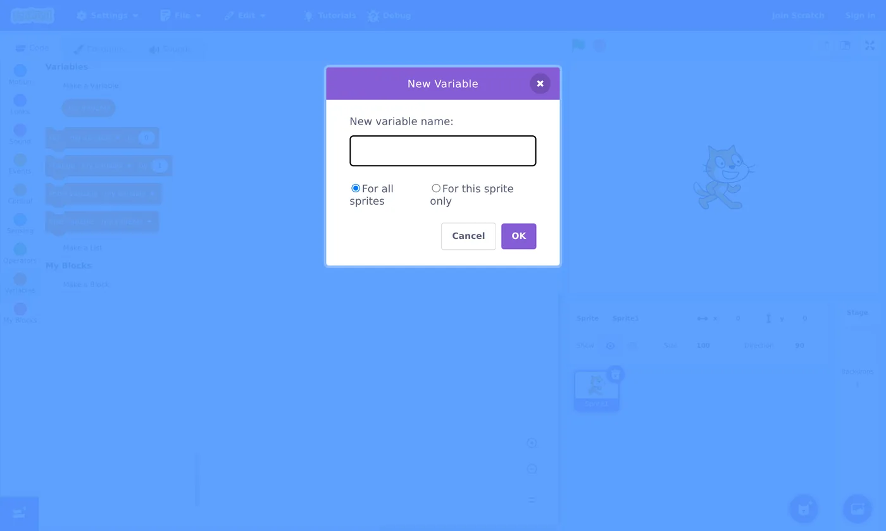

🎮 Lesson 3.2: A Simple Game with Variables & Score
This is the one kids beg to build: a real game. We'll make a "catch the apple" game and keep score — which means meeting one of the most powerful ideas in coding: the variable.
📚 What You'll Learn
By the end of this lesson, you will be able to:
- Understand what a variable is and create one
- Use set and change to keep a score
- Combine everything (loops, if, sensing, broadcasts) into a game
- Show the score on the stage
- Coach your child to design a game on paper before building it
Estimated Time: 50 minutes • Builds on: Modules 1–2 & Lesson 3.1 • Project: a "catch the apple" game with a score
In This Lesson
🎓 Learn It: What's a variable?
A variable is a labeled box that holds a value the computer can remember and change — like a score, a life count, or a player's name. The box has a name ("score") and a value (0, then 1, then 2…).
Think of a whiteboard on the wall labeled "SCORE." You can read what's on it, erase it, and write a new number. That's a variable.
Variables live in the orange Variables category. The three blocks you'll use constantly:
- set [score] to 0 — put a specific value in the box
- change [score] by 1 — add to what's already there
- [score] (the reporter) — read the current value
🎓 Learn It: Make a score variable
Click the Variables category, then “Make a Variable.” Name it score, keep "For all sprites," and click OK.

Once created, a checkbox appears next to score in the palette — tick it and the score shows live on the stage. New blocks (set, change, show/hide) now use your variable.
🗺️ The game plan
Our game: apples fall from the top; move the cat with the mouse to catch them; each catch scores a point.
Set the scene first: add an Apple sprite and keep the cat (or pick a "Bowl"). Optionally add a backdrop.
🛠️ Try It: Code the apple
Select the Apple sprite. It resets the score, then falls again and again from a random spot:
Read it as a story: start at the top at a random x, fall until caught (bounce back to the top if it hits the bottom edge), and when the cat catches it, add a point — then do it all again, forever.
💡 Where these came from
pick random is a green Operators block. touching is a blue-green Sensing block. repeat until and if are Control. You're combining four categories — real programming!
🛠️ Try It: Code the catcher
Select the Cat. It simply follows the mouse left–right along the bottom:
Press the green flag and move your mouse — the cat slides along the bottom, catching apples, and the score ticks up. You built a game! 🎉
✅ Make it a real challenge
Add a timer: make a time left variable, set it to 30, and in a loop change time left by -1 / wait 1 second until it hits 0, then broadcast game over and stop all. Now there's a reason to hurry.
🐛 Common problems & fixes
| Symptom | Fix |
|---|---|
| Score jumps up by lots at once | The apple keeps touching the cat for several frames. After scoring, add go to the top immediately (as above) so it leaves the cat. |
| Score never goes up | Check the touching block names the right sprite, and the cat and apple actually overlap. |
| Score doesn't reset | Make sure set score to 0 runs on the green flag, before the forever loop. |
🌱 Growth mindset: a harder project isn't a sign you've stopped improving
If this lesson felt noticeably tougher than the last few, that's expected. You're juggling four block categories, a variable, and two sprites at once — the project got bigger, so it feels harder, even though your skills grew. Learning comes in steps and plateaus: stretches where nothing seems to click, then a sudden "oh!" when it all fits together. If the apple script still feels like a lot, rebuild it once from memory tomorrow; the second time is almost always easier. Tell your child the same thing when their big game idea feels overwhelming: "Big projects feel hard for everyone. Let's get one piece working, then the next."
💬 Teach It: Design first, code second
Games are where kids' ambitions outrun their skills — and where frustration lives. Head it off by designing on paper first.
The one-page game design
- Goal: What are you trying to do? (Catch apples.)
- Controls: How do you play? (Move the mouse.)
- Scoring: How do you win/score? (+1 per catch.)
- Lose condition: Can you lose? (Timer runs out.)
"Before we code, tell me your game like you're explaining it to a friend. How do you play? How do you win? Let's write those down — those are our to-do list."
Explain variables with a real whiteboard
Grab a sticky note labeled "SCORE: 0." Each time you pretend to catch something, cross it out and write the next number. Then say: "the change score by 1 block does exactly this."
👧 Ages 5–7
You build most of it; they choose the apple, the catcher, and press GO. The thrill is catching + watching the number grow.
🧒 Ages 8–11
They can build the catcher and add the score change. Great age to add the timer and a "game over" message.
🧑 Ages 12+
Push for levels, a high-score variable, or a "lives" system. Let them scope it — then help them cut it down to something finishable.
⚠️ The scope trap
Kids dream up "an open-world game with 50 levels." Gently steer to one working mechanic first. "Let's make catching one apple perfect, then add more." A finished tiny game beats an abandoned huge one — for their motivation and yours.
🎯 Quick Check
Question 1: What is a variable?
Question 2: To add one point to the score, you use…
Question 3: Where should "set score to 0" go?
📓 Learning Journal
Take five minutes to write it down
Grab the same notebook or notes app you've been using. A few honest lines now will make the next lesson easier — and give you a record of how far you've come.
- Key concepts: Describe a variable using your own everyday comparison (a whiteboard? a scoreboard? a jar of marbles?). What's the difference between set and change?
- What clicked: Was it the score ticking up for the first time? Seeing pick random send the apple somewhere new each drop?
- Questions & confusion: Does the repeat until loop inside the forever make sense yet? Write down which part of the apple script you'd want to re-read.
- Ideas to try: One rule you'd add: a timer, lives, faster apples as the score rises, or a "bad" object to avoid.
- Progress & feelings: This was the biggest build so far. How did it feel to juggle it all? How did your child react when the game actually worked?
💡 Teach It tip: Tape your child's one-page game design (goal, controls, scoring, lose condition) into their notebook, and have them check off each part as it starts working. It turns a big project into a visible to-do list — and a record of how much they finished.
Summary & What's Next
🎓 Key Takeaways
- A variable is a named box that stores a changeable value like a score.
- set puts a value in; change adds to it; tick the checkbox to show it on stage.
- A game combines loops, if, sensing, operators, and variables together.
- Design on paper first, build one working mechanic, then grow it.
🏅 What You've Accomplished
- Created your first variable and used it to keep score
- Combined loops, if, sensing, operators, and variables into a working game
- Showed a live score on the stage
- Coached a "design first, code second" game project
📋 Before the Next Lesson
- Save the catch game — you'll use it to practice debugging next lesson
- Try adding the 30-second timer challenge
- Let your child play-test it and suggest one improvement
- Write your journal entry
❓ Common Questions at This Stage
What's the difference between "For all sprites" and "For this sprite only"?
"For all sprites" makes one shared score every sprite can read and change — perfect for a score or timer. "For this sprite only" gives that sprite its own private copy. When in doubt, pick "For all sprites"; that's what almost every beginner game needs.
My child wants more apples falling at once. Do we copy the apple sprite?
Duplicating the sprite (right-click → duplicate) works, but every copy has its own code to keep in sync. Scratch has a much neater tool for this called clones — one sprite that makes many copies of itself — and it gets a full lesson in Module 4.
The game is fun but my child already wants lives, levels, and a boss. How do I handle that?
Write every idea on a "someday" list so nothing is lost, then pick just one to add next. Finishing small upgrades one at a time keeps the game working and the motivation high. Several of those ideas — lives, a game-over screen, and a reset — are part of the capstone game in Module 4.
🔭 Looking Ahead
Every project hits bugs, and the best coders are the best fixers. In Lesson 3.3: Debugging & Remixing you'll learn a calm, kid-friendly method for tracking down problems, plus how to learn from others with See Inside and remixing. Hang on to this apple game, too: in Module 4 you'll grow the same idea into Star Catcher, with clones, lives, and a proper game-over screen.
💛 Encouragement for the Journey
You built a real, playable game with a scoreboard — something plenty of adults assume they could never do. If it stretched you, good: that stretch is exactly where the learning happens. Rest, play your game, and come back ready.